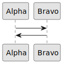

PlantUML Example
There is a plugin for sphinx called sphinxcontrib-plantuml which adds support for embedding plantuml
into .rst files so the generated HTML files will show beautiful UML diagrams.
One can achieve this by following these instructions:
Make sure
plantumlis properly installed on your machine/environment, for instance it can be installed viacondalike this:conda install -c conda-forge plantuml
Make sure you have the
sphinxplugin forplantuml(installable viapip)pip install sphinxcontrib-plantuml
Make sure that this plugin would be recognized in your
conf.pyby adding it to theextentionslistNote
In this project the
conf.pyis generated bycmakefrom theconf.py.infile and therefore this addition should be added toconf.py.insince it’s the template file for the generatedconf.py.extentions = [ ... "sphinxcontrib.plantuml", ... ]
After those instructions you should be able to add the following directives in your .rst files
.. uml::
@startuml
skinparam monochrome true
Alpha -> Bravo
Bravo -> Alpha
@enduml
Or if you prefer:
.. plantuml::
@startuml
skinparam monochrome true
Alpha -> Bravo
Bravo -> Alpha
@enduml
Here is how it looks (this is a very small sequence diagram)

Here is a far more complex class diagram :
![@startuml
package "ascii_art" {
class KeyboardInput {
- scanner : Scanner
+ getObject() : KeyboardInput
+ readLine() : String
}
interface Model {
+ add(args : String) : void
+ remove(args : String) : void
+ setCharacterSet(chars : char[]) : void
+ getCharacterSet() : char[]
+ setResolution(args : String) : int
+ setImageFile(args : String) : void
+ setOutput(args : String) : AsciiOutput
+ execute() : char[][]
}
interface Consumer {
+ apply(args : String) : void
}
class AsciiArtModel implements Model {
- subImgCharMatcher : SubImgCharMatcher
- resolution : int
- image : Image
- factory : AsciiOutputFactory
+ AsciiArtModel(charset : char[])
+ AsciiArtModel()
+ add(args : String) : void
+ remove(args : String) : void
+ setCharacterSet(chars : char[]) : void
+ getCharacterSet() : char[]
+ setResolution(args : String) : int
+ setImageFile(args : String) : void
+ setOutput(args : String) : AsciiOutput
+ execute() : char[][]
- loadImage(path : String) : Image
- parseArgs(args : String) : char[]
- parseRange(argument : String) : char[]
+ isValidRangeChar(argument : String) : boolean
+ isValidRangeChar(c : char) : boolean
- parseArgsAsPath(args : String) : String
- parseOutput(args : String) : String
}
class AsciiArtAlgorithm {
- image : Image
- resolution : int
- subImgCharMatcher : SubImgCharMatcher
+ AsciiArtAlgorithm(image : Image, resolution : int, subImgCharMatcher : SubImgCharMatcher)
+ run() : char[][]
}
class Shell {
- model : Model
- view : AsciiOutput
- running : boolean
- operations : HashMap<String, Consumer>
+ Shell(model : Model)
+ run() : void
+ main(args : String[]) : void
- set_operations() : void
- exit(args : String) : void
- asciiArt(args : String) : void
- output(args : String) : void
- image(args : String) : void
- res(args : String) : void
- remove(args : String) : void
- add(args : String) : void
- chars(args : String) : void
+ parseCommand(line : String) : String[]
}
}
/'end of package ascii_art'/
package "image_char_matching" {
class SubImgCharMatcher {
- charset : ArrayList<Character>
- dictBrightness : HashMap<Character, Double>
- allBrightness : HashMap<Character, Double>
- cache : HashMap<Double, Character>
- minBrightHeap : PriorityQueue<Double>
- maxBrightHeap : PriorityQueue<Double>
- normalizedBrightness : HashMap<Character, Double>
+ SubImgCharMatcher(charset : char[])
+ getCharByImageBrightness(brightness : double) : char
+ addChar(c : char) : void
+ removeChar(c : char) : void
+ getCharSet() : char[]
- histogramEqualization() : void
- addCharUnSafe(c : char) : void
- removeUnSafeChar(c : char) : void
- getDistance(brightness : double, c : char) : double
- calculateBrightness(boolArrayChar : boolean[][]) : double
- calculateBrightness(c : char) : double
}
class CharConverter {
{static} + convertToBoolArray(c : char) : boolean[][]
}
} /'end of package image_char_matching'/
package "image" {
class ImageManipulator {
{static} + padImage(image : Image) : Image
{static} + splitImage(image : Image, resolution : int) : Image[][]
{static} + isValidResolution(image : Image, resolution : int) : boolean
{static} + getImageBrightness(image : Image) : double
- RGB2Gray(image : Image) : double[][]
- RGB2Gray(color : Color) : double
- nearestPowerOfTwo(number : int) : int
- log2(number : int) : double
- extractSubImage(image : Image, topLeftCornerRow : int, topLeftCornerColumn : int, squareEdge : int) : Image
}
class Image {
- pixelArray : Color[][]
- width : int
- height : int
+ Image(filename : String)
+ Image(pixelArray : Color[][], width : int, height : int)
+ getWidth() : int
+ getHeight() : int
+ getPixel(x : int, y : int) : Color
+ saveImage(fileName : String) : void
}
} /'end of package image'/
package "exceptions" {
exception ModelException {
+ ModelException(errorMessage : String)
}
} /'end of package exceptions'/
package "ascii_output" {
interface AsciiOutput {
+ out(chars : char[][]) : void
}
class HtmlAsciiOutput implements AsciiOutput {
- fontName : String
- filename : String
+ HtmlAsciiOutput(filename : String, fontName : String)
+ out(chars : char[][]) : void
}
class ConsoleAsciiOutput implements AsciiOutput {
+ out(chars : char[][]) : void
}
} /'end of package ascii_output'/
package "factories"{
class AsciiOutputFactory {
- fontName : String
- filename : String
+ AsciiOutputFactory()
+ AsciiOutputFactory(filename : String, fontName : String)
+ build(name : String) : AsciiOutput
}
}
/'associations'/
AsciiArtModel *-- SubImgCharMatcher
AsciiArtAlgorithm *-- SubImgCharMatcher
AsciiArtAlgorithm *-- Image
AsciiArtModel *-- Image
Shell *-- AsciiOutput
AsciiArtModel *-- AsciiOutputFactory
Shell *-- Model
Shell o-- Consumer /' aggragates Consumers (command handlers) '/
/'relations'/
Model "throws" ..> ModelException
ImageManipulator .. Image : uses
SubImgCharMatcher .. CharConverter : uses
Shell .. KeyboardInput : uses
AsciiArtModel .. ImageManipulator : uses
AsciiArtAlgorithm .. ImageManipulator : uses
/' factory relations '/
AsciiOutputFactory <|-- ConsoleAsciiOutput
AsciiOutputFactory <|-- HtmlAsciiOutput
AsciiOutputFactory --> AsciiOutput
@enduml](_images/plantuml-1536b4496d1a8680530b3fb58c775a0a85adfbb2.svg)